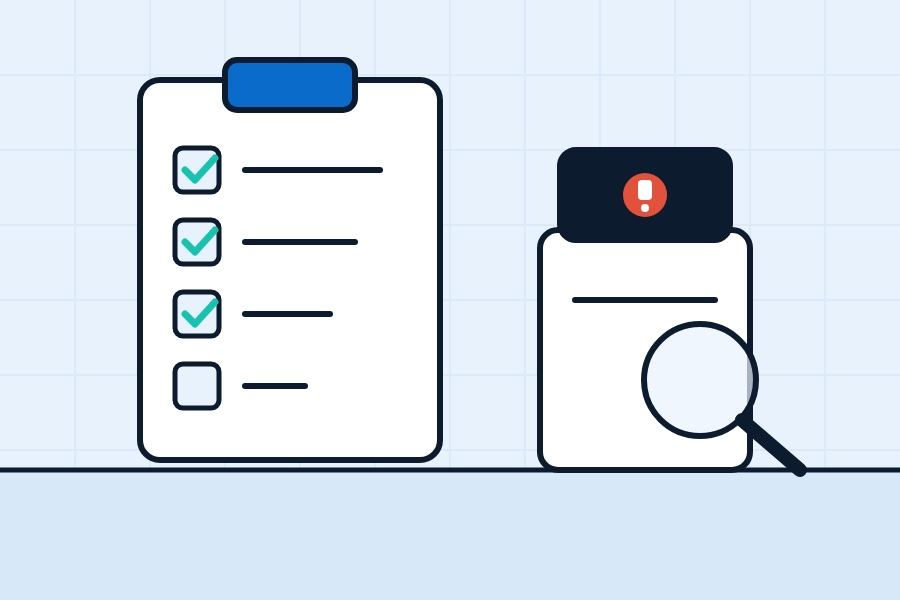

Softeners tend to start sulking after a run of disruption. A storm and a power cut, a freezing week in the garage, or simply a busy few months when nobody's checked the salt. Then one day you notice the kettle's furry again and the shower screen's gone cloudy.
Before you book a call-out, it's worth running through this list. Lots of softener problems are quick to fix yourself. Work through it in order, as the most common causes are at the top.
First: if it's leaking
If water's coming out of the softener, its connections or the cupboard floor's wet, put the softener into bypass straight away. That takes it out of the loop and keeps your water running. The bypass is usually a lever or a pair of knobs on the back or side of the valve, and your manual or a sticker on the unit will show which way is which. If you can't find it, turn off the water at the stopcock. Then give us a call.
1. Is there salt in it?
Obvious, but it's the number one cause. No salt means no brine, and no brine means the resin can't recharge. Top it up with the right type for your softener (our guide to block salt, tablets and granular will help) and give it a day or two to catch up. Some units let you run a manual regeneration to speed things along. Your manual will say how.
2. Is the salt actually going down?
If the tank looks full but the level hasn't moved in weeks, you've probably got a salt bridge. That's a hard crust across the tank with an empty space underneath, so the salt isn't touching the water. Gently push a broom handle down through the salt. If it hits a crust and then drops, break the crust up carefully, without bashing the sides or anything inside the tank.
The opposite problem, a mushy sludge in the bottom of the tank, is often down to the wrong salt or a lot of residue. That usually means scooping out and cleaning the tank, which is part of a normal service.
3. Is it in bypass?
Softeners get left in bypass more often than you'd think, after a plumber's visit or a repair. Check the bypass is in the normal "service" position.
4. Has there been a power cut?
Electric softeners need their clock to know when to regenerate. After a power cut, some lose the time and regenerate in the middle of the day, or not at all. Check the display. If the time's flashing or wrong, reset it using the manual. If the screen's blank, check the plug, the socket and the fuse.
5. Is the hardness setting right?
Softeners are set up for a particular water hardness and, on many models, household size. If those settings are wrong, the softener may not regenerate often enough and hard water slips through. This can happen after a reset, or if your household's grown since it was set up. Check the settings against the manual. If you don't know your water hardness, your water supplier publishes it by postcode, and our postcode checker gives a rough guide.
6. Is the drain line OK?
Every time a softener regenerates, it flushes water to a drain through a small flexible pipe. If that pipe's kinked, squashed behind a box, blocked, or frozen in a cold garage, the softener can't regenerate properly. Have a look along its length. If it's in an unheated space, think about insulating it before next winter.
7. Is there too much water in the brine tank?
A bit of water in the bottom of the brine tank is normal. If it's standing much higher than usual, something's stopping the softener drawing the brine out. Common culprits are a blocked injector or screen, a drain problem or a valve fault. The injector is a small part with a tiny hole, and grime from salt can clog it. Some people are happy to clean it themselves using the manual, but if you're not confident, this is one for an engineer.
8. Low water pressure?
If the pressure dropped after the softener was fitted or recently, check whether it's low on every tap or just some. If putting the softener into bypass brings the pressure back, the problem's likely in or around the softener, such as a blocked filter or a valve issue. If it doesn't, the softener probably isn't the cause.
9. Is it just old?
The resin beads inside a softener don't last forever. Over many years they can wear out or get fouled, and the softener gradually softens less and less, even with everything else working. An engineer can test the water going in and coming out and tell you whether the resin's past its best. Then you can decide whether new resin or a new softener makes more sense.
Testing whether it's working
The easiest check is a hardness test strip. Run a softened tap, like the bathroom basin, for a bit and test it. Softened water should read at or near zero. Test the drinking tap too for comparison. That should read hard.
When to call us
If you've worked through the list and you're still getting hard water, the tank's flooding, there's a leak or the display's showing an error code you can't clear, it's time for an engineer. Book a visit through our servicing and repairs page. We work on all the major brands, not just ones we've fitted.
Prevention's easier than cure, too. A yearly service catches most of these problems early. Our guide to how often to service a water softener explains what's involved. And if your softener came with the house and you're not sure of its history, read buying a house with a water softener.
Quick answers
Why is my water softener not using salt?
Usually a salt bridge, a crust with a gap underneath. Gently break it up with a broom handle. Otherwise the softener may not be regenerating because of a clock, settings, drain or injector problem.
Why is there so much water in my brine tank?
A little is normal. Lots of standing water usually means the softener can't draw the brine out, often because of a blocked injector, a drain problem or a valve fault.
How do I know if my water softener is working?
Test a softened tap with a hardness test strip. It should read at or near zero. You should also see the salt level going down over time, and limescale shouldn't be returning.
Want a hand with your water?
Book a free survey and water test. We'll tell you straight whether a softener's worth it for your home.
Get a free quote